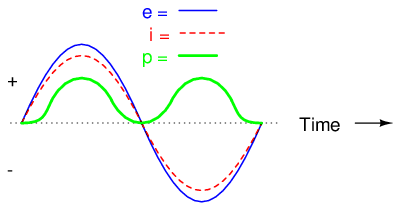
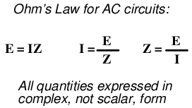
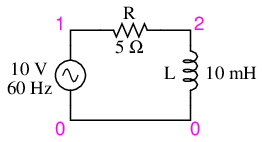
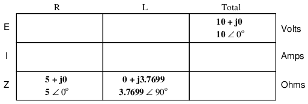

Pure resistive AC circuit: resistor voltage and current are in phase.
If we were to plot the current and voltage for a very simple AC circuit consisting of a source and a resistor (Figure above), it would look something like this: (Figure below)
Voltage and current “in phase” for resistive circuit.
Because the resistor simply and directly resists the flow of electrons at all periods of time, the waveform for the voltage drop across the resistor is exactly in phase with the waveform for the current through it. We can look at any point in time along the horizontal axis of the plot and compare those values of current and voltage with each other (any “snapshot” look at the values of a wave are referred to as instantaneous values, meaning the values at that instant in time). When the instantaneous value for current is zero, the instantaneous voltage across the resistor is also zero. Likewise, at the moment in time where the current through the resistor is at its positive peak, the voltage across the resistor is also at its positive peak, and so on. At any given point in time along the waves, Ohm's Law holds true for the instantaneous values of voltage and current.
We can also calculate the power dissipated by this resistor, and plot those values on the same graph: (Figure below)

Instantaneous AC power in a pure resistive circuit is always positive.
Note that the power is never a negative value. When the current is positive (above the line), the voltage is also positive, resulting in a power (p=ie) of a positive value. Conversely, when the current is negative (below the line), the voltage is also negative, which results in a positive value for power (a negative number multiplied by a negative number equals a positive number). This consistent “polarity” of power tells us that the resistor is always dissipating power, taking it from the source and releasing it in the form of heat energy. Whether the current is positive or negative, a resistor still dissipates energy.
Inductors do not behave the same as resistors. Whereas resistors simply oppose the flow of electrons through them (by dropping a voltage directly proportional to the current), inductors oppose changes in current through them, by dropping a voltage directly proportional to the rate of change of current. In accordance with Lenz's Law, this induced voltage is always of such a polarity as to try to maintain current at its present value. That is, if current is increasing in magnitude, the induced voltage will “push against” the electron flow; if current is decreasing, the polarity will reverse and “push with” the electron flow to oppose the decrease. This opposition to current change is called reactance, rather than resistance.
Expressed mathematically, the relationship between the voltage dropped across the inductor and rate of current change through the inductor is as such:
The expression di/dt is one from calculus, meaning the rate of change of instantaneous current (i) over time, in amps per second. The inductance (L) is in Henrys, and the instantaneous voltage (e), of course, is in volts. Sometimes you will find the rate of instantaneous voltage expressed as “v” instead of “e” (v = L di/dt), but it means the exact same thing. To show what happens with alternating current, let's analyze a simple inductor circuit: (Figure below)
Pure inductive circuit: Inductor current lags inductor voltage by 90o.
If we were to plot the current and voltage for this very simple circuit, it would look something like this: (Figure below)
Pure inductive circuit, waveforms.
Remember, the voltage dropped across an inductor is a reaction against the change in current through it. Therefore, the instantaneous voltage is zero whenever the instantaneous current is at a peak (zero change, or level slope, on the current sine wave), and the instantaneous voltage is at a peak wherever the instantaneous current is at maximum change (the points of steepest slope on the current wave, where it crosses the zero line). This results in a voltage wave that is 90o out of phase with the current wave. Looking at the graph, the voltage wave seems to have a “head start” on the current wave; the voltage “leads” the current, and the current “lags” behind the voltage. (Figure below)
Current lags voltage by 90o in a pure inductive circuit.
Things get even more interesting when we plot the power for this circuit: (Figure below)

In a pure inductive circuit, instantaneous power may be positive or negative
Because instantaneous power is the product of the instantaneous voltage and the instantaneous current (p=ie), the power equals zero whenever the instantaneous current or voltage is zero. Whenever the instantaneous current and voltage are both positive (above the line), the power is positive. As with the resistor example, the power is also positive when the instantaneous current and voltage are both negative (below the line). However, because the current and voltage waves are 90o out of phase, there are times when one is positive while the other is negative, resulting in equally frequent occurrences of negative instantaneous power.
But what does negative power mean? It means that the inductor is releasing power back to the circuit, while a positive power means that it is absorbing power from the circuit. Since the positive and negative power cycles are equal in magnitude and duration over time, the inductor releases just as much power back to the circuit as it absorbs over the span of a complete cycle. What this means in a practical sense is that the reactance of an inductor dissipates a net energy of zero, quite unlike the resistance of a resistor, which dissipates energy in the form of heat. Mind you, this is for perfect inductors only, which have no wire resistance.
An inductor's opposition to change in current translates to an opposition to alternating current in general, which is by definition always changing in instantaneous magnitude and direction. This opposition to alternating current is similar to resistance, but different in that it always results in a phase shift between current and voltage, and it dissipates zero power. Because of the differences, it has a different name: reactance. Reactance to AC is expressed in ohms, just like resistance is, except that its mathematical symbol is X instead of R. To be specific, reactance associated with an inductor is usually symbolized by the capital letter X with a letter L as a subscript, like this: XL.
Since inductors drop voltage in proportion to the rate of current change, they will drop more voltage for faster-changing currents, and less voltage for slower-changing currents. What this means is that reactance in ohms for any inductor is directly proportional to the frequency of the alternating current. The exact formula for determining reactance is as follows:
If we expose a 10 mH inductor to frequencies of 60, 120, and 2500 Hz, it will manifest the reactances in Table Figure below.
Reactance of a 10 mH inductor:
| Frequency (Hertz) | Reactance (Ohms) |
|---|---|
| 60 | 3.7699 |
| 120 | 7.5398 |
| 2500 | 157.0796 |
In the reactance equation, the term “2πf” (everything on the right-hand side except the L) has a special meaning unto itself. It is the number of radians per second that the alternating current is “rotating” at, if you imagine one cycle of AC to represent a full circle's rotation. A radian is a unit of angular measurement: there are 2π radians in one full circle, just as there are 360o in a full circle. If the alternator producing the AC is a double-pole unit, it will produce one cycle for every full turn of shaft rotation, which is every 2π radians, or 360o. If this constant of 2π is multiplied by frequency in Hertz (cycles per second), the result will be a figure in radians per second, known as the angular velocity of the AC system.
Angular velocity may be represented by the expression 2πf, or it may be represented by its own symbol, the lower-case Greek letter Omega, which appears similar to our Roman lower-case “w”: ω. Thus, the reactance formula XL = 2πfL could also be written as XL = ωL.
It must be understood that this “angular velocity” is an expression of how rapidly the AC waveforms are cycling, a full cycle being equal to 2π radians. It is not necessarily representative of the actual shaft speed of the alternator producing the AC. If the alternator has more than two poles, the angular velocity will be a multiple of the shaft speed. For this reason, ω is sometimes expressed in units of electrical radians per second rather than (plain) radians per second, so as to distinguish it from mechanical motion.
Any way we express the angular velocity of the system, it is apparent that it is directly proportional to reactance in an inductor. As the frequency (or alternator shaft speed) is increased in an AC system, an inductor will offer greater opposition to the passage of current, and vice versa. Alternating current in a simple inductive circuit is equal to the voltage (in volts) divided by the inductive reactance (in ohms), just as either alternating or direct current in a simple resistive circuit is equal to the voltage (in volts) divided by the resistance (in ohms). An example circuit is shown here: (Figure below)
Inductive reactance
However, we need to keep in mind that voltage and current are not in phase here. As was shown earlier, the voltage has a phase shift of +90o with respect to the current. (Figure below) If we represent these phase angles of voltage and current mathematically in the form of complex numbers, we find that an inductor's opposition to current has a phase angle, too:
Current lags voltage by 90o in an inductor.
Mathematically, we say that the phase angle of an inductor's opposition to current is 90o, meaning that an inductor's opposition to current is a positive imaginary quantity. This phase angle of reactive opposition to current becomes critically important in circuit analysis, especially for complex AC circuits where reactance and resistance interact. It will prove beneficial to represent any component's opposition to current in terms of complex numbers rather than scalar quantities of resistance and reactance.
In the previous section, we explored what would happen in simple resistor-only and inductor-only AC circuits. Now we will mix the two components together in series form and investigate the effects.
Take this circuit as an example to work with: (Figure below)
Series resistor inductor circuit: Current lags applied voltage by 0o to 90o.
The resistor will offer 5 Ω of resistance to AC current regardless of frequency, while the inductor will offer 3.7699 Ω of reactance to AC current at 60 Hz. Because the resistor's resistance is a real number (5 Ω ∠ 0o, or 5 + j0 Ω), and the inductor's reactance is an imaginary number (3.7699 Ω ∠ 90o, or 0 + j3.7699 Ω), the combined effect of the two components will be an opposition to current equal to the complex sum of the two numbers. This combined opposition will be a vector combination of resistance and reactance. In order to express this opposition succinctly, we need a more comprehensive term for opposition to current than either resistance or reactance alone. This term is called impedance, its symbol is Z, and it is also expressed in the unit of ohms, just like resistance and reactance. In the above example, the total circuit impedance is:
Impedance is related to voltage and current just as you might expect, in a manner similar to resistance in Ohm's Law:

In fact, this is a far more comprehensive form of Ohm's Law than what was taught in DC electronics (E=IR), just as impedance is a far more comprehensive expression of opposition to the flow of electrons than resistance is. Any resistance and any reactance, separately or in combination (series/parallel), can be and should be represented as a single impedance in an AC circuit.
To calculate current in the above circuit, we first need to give a phase angle reference for the voltage source, which is generally assumed to be zero. (The phase angles of resistive and inductive impedance are always 0o and +90o, respectively, regardless of the given phase angles for voltage or current).
As with the purely inductive circuit, the current wave lags behind the voltage wave (of the source), although this time the lag is not as great: only 37.016o as opposed to a full 90o as was the case in the purely inductive circuit. (Figure below)
Current lags voltage in a series L-R circuit.
For the resistor and the inductor, the phase relationships between voltage and current haven't changed. Voltage across the resistor is in phase (0o shift) with the current through it; and the voltage across the inductor is +90o out of phase with the current going through it. We can verify this mathematically:
The voltage across the resistor has the exact same phase angle as the current through it, telling us that E and I are in phase (for the resistor only).
The voltage across the inductor has a phase angle of 52.984o, while the current through the inductor has a phase angle of -37.016o, a difference of exactly 90o between the two. This tells us that E and I are still 90o out of phase (for the inductor only).
We can also mathematically prove that these complex values add together to make the total voltage, just as Kirchhoff's Voltage Law would predict:
Let's check the validity of our calculations with SPICE: (Figure below)

Spice circuit: R-L.
ac r-l circuit v1 1 0 ac 10 sin r1 1 2 5 l1 2 0 10m .ac lin 1 60 60 .print ac v(1,2) v(2,0) i(v1) .print ac vp(1,2) vp(2,0) ip(v1) .end
freq v(1,2) v(2) i(v1) 6.000E+01 7.985E+00 6.020E+00 1.597E+00 freq vp(1,2) vp(2) ip(v1) 6.000E+01 -3.702E+01 5.298E+01 1.430E+02
Note that just as with DC circuits, SPICE outputs current figures as though they were negative (180o out of phase) with the supply voltage. Instead of a phase angle of -37.016o, we get a current phase angle of 143o (-37o + 180o). This is merely an idiosyncrasy of SPICE and does not represent anything significant in the circuit simulation itself. Note how both the resistor and inductor voltage phase readings match our calculations (-37.02o and 52.98o, respectively), just as we expected them to.
With all these figures to keep track of for even such a simple circuit as this, it would be beneficial for us to use the “table” method. Applying a table to this simple series resistor-inductor circuit would proceed as such. First, draw up a table for E/I/Z figures and insert all component values in these terms (in other words, don't insert actual resistance or inductance values in Ohms and Henrys, respectively, into the table; rather, convert them into complex figures of impedance and write those in):

Although it isn't necessary, I find it helpful to write both the rectangular and polar forms of each quantity in the table. If you are using a calculator that has the ability to perform complex arithmetic without the need for conversion between rectangular and polar forms, then this extra documentation is completely unnecessary. However, if you are forced to perform complex arithmetic “longhand” (addition and subtraction in rectangular form, and multiplication and division in polar form), writing each quantity in both forms will be useful indeed.
Now that our “given” figures are inserted into their respective locations in the table, we can proceed just as with DC: determine the total impedance from the individual impedances. Since this is a series circuit, we know that opposition to electron flow (resistance or impedance) adds to form the total opposition:
Now that we know total voltage and total impedance, we can apply Ohm's Law (I=E/Z) to determine total current:

Just as with DC, the total current in a series AC circuit is shared equally by all components. This is still true because in a series circuit there is only a single path for electrons to flow, therefore the rate of their flow must uniform throughout. Consequently, we can transfer the figures for current into the columns for the resistor and inductor alike:
Now all that's left to figure is the voltage drop across the resistor and inductor, respectively. This is done through the use of Ohm's Law (E=IZ), applied vertically in each column of the table:
And with that, our table is complete. The exact same rules we applied in the analysis of DC circuits apply to AC circuits as well, with the caveat that all quantities must be represented and calculated in complex rather than scalar form. So long as phase shift is properly represented in our calculations, there is no fundamental difference in how we approach basic AC circuit analysis versus DC.
Now is a good time to review the relationship between these calculated figures and readings given by actual instrument measurements of voltage and current. The figures here that directly relate to real-life measurements are those in polar notation, not rectangular! In other words, if you were to connect a voltmeter across the resistor in this circuit, it would indicate 7.9847 volts, not 6.3756 (real rectangular) or 4.8071 (imaginary rectangular) volts. To describe this in graphical terms, measurement instruments simply tell you how long the vector is for that particular quantity (voltage or current).
Rectangular notation, while convenient for arithmetical addition and subtraction, is a more abstract form of notation than polar in relation to real-world measurements. As I stated before, I will indicate both polar and rectangular forms of each quantity in my AC circuit tables simply for convenience of mathematical calculation. This is not absolutely necessary, but may be helpful for those following along without the benefit of an advanced calculator. If we were to restrict ourselves to the use of only one form of notation, the best choice would be polar, because it is the only one that can be directly correlated to real measurements.
Impedance (Z) of a series R-L circuit may be calculated, given the resistance (R) and the inductive reactance (XL). Since E=IR, E=IXL, and E=IZ, resistance, reactance, and impedance are proportional to voltage, respectively. Thus, the voltage phasor diagram can be replaced by a similar impedance diagram. (Figure below)

Series: R-L circuit Impedance phasor diagram.
Example:
Given: A 40 Ω resistor in series with a 79.58 millihenry inductor. Find the impedance at 60 hertz.
XL = 2πfL XL = 2π·60·79.58×10-3 XL = 30 Ω Z = R + jXL Z = 40 + j30 |Z| = sqrt(402 + 302) = 50 Ω ∠Z = arctangent(30/40) = 36.87o Z = 40 + j30 = 50∠36.87o
Let's take the same components for our series example circuit and connect them in parallel: (Figure below)
Parallel R-L circuit.
Because the power source has the same frequency as the series example circuit, and the resistor and inductor both have the same values of resistance and inductance, respectively, they must also have the same values of impedance. So, we can begin our analysis table with the same “given” values:
The only difference in our analysis technique this time is that we will apply the rules of parallel circuits instead of the rules for series circuits. The approach is fundamentally the same as for DC. We know that voltage is shared uniformly by all components in a parallel circuit, so we can transfer the figure of total voltage (10 volts ∠ 0o) to all components columns:
Now we can apply Ohm's Law (I=E/Z) vertically to two columns of the table, calculating current through the resistor and current through the inductor:
Just as with DC circuits, branch currents in a parallel AC circuit add to form the total current (Kirchhoff's Current Law still holds true for AC as it did for DC):
Finally, total impedance can be calculated by using Ohm's Law (Z=E/I) vertically in the “Total” column. Incidentally, parallel impedance can also be calculated by using a reciprocal formula identical to that used in calculating parallel resistances.

The only problem with using this formula is that it typically involves a lot of calculator keystrokes to carry out. And if you're determined to run through a formula like this “longhand,” be prepared for a very large amount of work! But, just as with DC circuits, we often have multiple options in calculating the quantities in our analysis tables, and this example is no different. No matter which way you calculate total impedance (Ohm's Law or the reciprocal formula), you will arrive at the same figure:
In an ideal case, an inductor acts as a purely reactive device. That is, its opposition to AC current is strictly based on inductive reaction to changes in current, and not electron friction as is the case with resistive components. However, inductors are not quite so pure in their reactive behavior. To begin with, they're made of wire, and we know that all wire possesses some measurable amount of resistance (unless its superconducting wire). This built-in resistance acts as though it were connected in series with the perfect inductance of the coil, like this: (Figure below)
Inductor Equivalent circuit of a real inductor.
Consequently, the impedance of any real inductor will always be a complex combination of resistance and inductive reactance.
Compounding this problem is something called the skin effect, which is AC's tendency to flow through the outer areas of a conductor's cross-section rather than through the middle. When electrons flow in a single direction (DC), they use the entire cross-sectional area of the conductor to move. Electrons switching directions of flow, on the other hand, tend to avoid travel through the very middle of a conductor, limiting the effective cross-sectional area available. The skin effect becomes more pronounced as frequency increases.
Also, the alternating magnetic field of an inductor energized with AC may radiate off into space as part of an electromagnetic wave, especially if the AC is of high frequency. This radiated energy does not return to the inductor, and so it manifests itself as resistance (power dissipation) in the circuit.
Added to the resistive losses of wire and radiation, there are other effects at work in iron-core inductors which manifest themselves as additional resistance between the leads. When an inductor is energized with AC, the alternating magnetic fields produced tend to induce circulating currents within the iron core known as eddy currents. These electric currents in the iron core have to overcome the electrical resistance offered by the iron, which is not as good a conductor as copper. Eddy current losses are primarily counteracted by dividing the iron core up into many thin sheets (laminations), each one separated from the other by a thin layer of electrically insulating varnish. With the cross-section of the core divided up into many electrically isolated sections, current cannot circulate within that cross-sectional area and there will be no (or very little) resistive losses from that effect.
As you might have expected, eddy current losses in metallic inductor cores manifest themselves in the form of heat. The effect is more pronounced at higher frequencies, and can be so extreme that it is sometimes exploited in manufacturing processes to heat metal objects! In fact, this process of “inductive heating” is often used in high-purity metal foundry operations, where metallic elements and alloys must be heated in a vacuum environment to avoid contamination by air, and thus where standard combustion heating technology would be useless. It is a “non-contact” technology, the heated substance not having to touch the coil(s) producing the magnetic field.
In high-frequency service, eddy currents can even develop within the cross-section of the wire itself, contributing to additional resistive effects. To counteract this tendency, special wire made of very fine, individually insulated strands called Litz wire (short for Litzendraht) can be used. The insulation separating strands from each other prevent eddy currents from circulating through the whole wire's cross-sectional area.
Additionally, any magnetic hysteresis that needs to be overcome with every reversal of the inductor's magnetic field constitutes an expenditure of energy that manifests itself as resistance in the circuit. Some core materials (such as ferrite) are particularly notorious for their hysteretic effect. Counteracting this effect is best done by means of proper core material selection and limits on the peak magnetic field intensity generated with each cycle.
Altogether, the stray resistive properties of a real inductor (wire resistance, radiation losses, eddy currents, and hysteresis losses) are expressed under the single term of “effective resistance:” (Figure below)
Equivalent circuit of a real inductor with skin-effect, radiation, eddy current, and hysteresis losses.
It is worthy to note that the skin effect and radiation losses apply just as well to straight lengths of wire in an AC circuit as they do a coiled wire. Usually their combined effect is too small to notice, but at radio frequencies they can be quite large. A radio transmitter antenna, for example, is designed with the express purpose of dissipating the greatest amount of energy in the form of electromagnetic radiation.
Effective resistance in an inductor can be a serious consideration for the AC circuit designer. To help quantify the relative amount of effective resistance in an inductor, another value exists called the Q factor, or “quality factor” which is calculated as follows:
The symbol “Q” has nothing to do with electric charge (coulombs), which tends to be confusing. For some reason, the Powers That Be decided to use the same letter of the alphabet to denote a totally different quantity.
The higher the value for “Q,” the “purer” the inductor is. Because its so easy to add additional resistance if needed, a high-Q inductor is better than a low-Q inductor for design purposes. An ideal inductor would have a Q of infinity, with zero effective resistance.
Because inductive reactance (X) varies with frequency, so will Q. However, since the resistive effects of inductors (wire skin effect, radiation losses, eddy current, and hysteresis) also vary with frequency, Q does not vary proportionally with reactance. In order for a Q value to have precise meaning, it must be specified at a particular test frequency.
Stray resistance isn't the only inductor quirk we need to be aware of. Due to the fact that the multiple turns of wire comprising inductors are separated from each other by an insulating gap (air, varnish, or some other kind of electrical insulation), we have the potential for capacitance to develop between turns. AC capacitance will be explored in the next chapter, but it suffices to say at this point that it behaves very differently from AC inductance, and therefore further “taints” the reactive purity of real inductors.
As previously mentioned, the skin effect is where alternating current tends to avoid travel through the center of a solid conductor, limiting itself to conduction near the surface. This effectively limits the cross-sectional conductor area available to carry alternating electron flow, increasing the resistance of that conductor above what it would normally be for direct current: (Figure below)
Skin effect: skin depth decreases with increasing frequency.
The electrical resistance of the conductor with all its cross-sectional area in use is known as the “DC resistance,” the “AC resistance” of the same conductor referring to a higher figure resulting from the skin effect. As you can see, at high frequencies the AC current avoids travel through most of the conductor's cross-sectional area. For the purpose of conducting current, the wire might as well be hollow!
In some radio applications (antennas, most notably) this effect is exploited. Since radio-frequency (“RF”) AC currents wouldn't travel through the middle of a conductor anyway, why not just use hollow metal rods instead of solid metal wires and save both weight and cost? (Figure below) Most antenna structures and RF power conductors are made of hollow metal tubes for this reason.
In the following photograph you can see some large inductors used in a 50 kW radio transmitting circuit. The inductors are hollow copper tubes coated with silver, for excellent conductivity at the “skin” of the tube:
High power inductors formed from hollow tubes.
The degree to which frequency affects the effective resistance of a solid wire conductor is impacted by the gauge of that wire. As a rule, large-gauge wires exhibit a more pronounced skin effect (change in resistance from DC) than small-gauge wires at any given frequency. The equation for approximating skin effect at high frequencies (greater than 1 MHz) is as follows:
Table below gives approximate values of “k” factor for various round wire sizes.
“k” factor for various AWG wire sizes.
| gage size | k factor | gage size | k factor |
|---|---|---|---|
| 4/0 | 124.5 | 8 | 34.8 |
| 2/0 | 99.0 | 10 | 27.6 |
| 1/0 | 88.0 | 14 | 17.6 |
| 2 | 69.8 | 18 | 10.9 |
| 4 | 55.5 | 22 | 6.86 |
| 6 | 47.9 | - | - |
For example, a length of number 10-gauge wire with a DC end-to-end resistance of 25 Ω would have an AC (effective) resistance of 2.182 kΩ at a frequency of 10 MHz:
Please remember that this figure is not impedance, and it does not consider any reactive effects, inductive or capacitive. This is simply an estimated figure of pure resistance for the conductor (that opposition to the AC flow of electrons which does dissipate power in the form of heat), corrected for the skin effect. Reactance, and the combined effects of reactance and resistance (impedance), are entirely different matters.
Contributors to this chapter are listed in chronological order of their contributions, from most recent to first. See Appendix 2 (Contributor List) for dates and contact information.
Jim Palmer (June 2001): Identified and offered correction for typographical error in complex number calculation.
Jason Starck (June 2000): HTML document formatting, which led to a much better-looking second edition.
Lessons In Electric Circuits copyright (C) 2000-2023 Tony R. Kuphaldt, under the terms and conditions of the CC BY License.
{kind=link}
{kind=link}
{kind=link}
{kind=link}
{kind=link}
{kind=link}
{kind=link}
{kind=link}
{kind=link}
{kind=link}
{kind=link}
{kind=link}
{kind=link}
{kind=link}
{kind=link}
{kind=link}
{kind=link}
{kind=link}